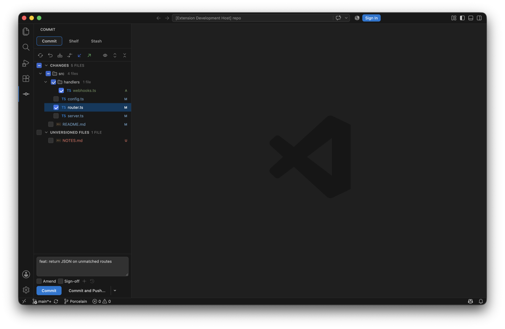
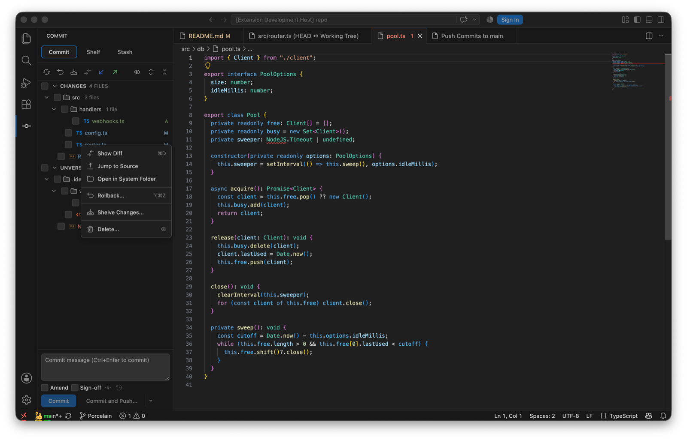

The Commit view in the activity bar is IntelliJ's Commit tool window. Tick the files you want and commit. Staging never enters into it: the checkboxes are the commit, and a file is committed as it is on disk.

Changes and Unversioned Files, grouped by directory, with the status letter on the right and the message box below.
The tree
Changes with a checkbox on every file and directory; a directory checkbox ticks everything under it. Unversioned Files below, unticked by default.
During a merge, rebase or cherry-pick a Merge Conflicts group appears nested inside Changes, the way IntelliJ shows it, with a Resolve link. A banner above names the operation and offers to continue or abort.
Multi-selection, and a context menu per file: Show Diff (⌘D), Jump to Source, Open in System Folder, Rollback… (⌥⌘Z), Shelve Changes… and Delete…. Unversioned files add Add to .gitignore, which won't duplicate an entry that's already there.
The toolbar refreshes, rolls back, shelves, and expands or collapses the tree. ⌘F7 and ⌘⇧F7 step through the changed files' diffs from an editor.

The file context menu in the Commit view.
Hunks and lines
Open a changed file's diff and the working-tree side has gutter controls per change: include this hunk, exclude it, or revert it. A change can also be addressed by its line range, which is how the diff reaches exactly the block you pointed at when git has merged neighbouring changes into one hunk. Porcelain rebuilds a patch from just the chosen hunks and lets git apply it with context still verified, so a file that changed underneath refuses to apply in the wrong place. The tree checkbox and the per-hunk state stay in sync.
A working-tree diff from the Commit view. The checkbox in the gutter is the hunk's inclusion; Revert this change sits beside it.
The message
An empty message is seeded from commit.template, or from git's own MERGE_MSG while a merge is in progress.
The history dropdown recalls recent messages.
Amend and Sign-off sit under the box. The options panel adds Skip commit hooks and an Author override, which is rejected before it reaches git if it looks like an option.
Commit (⌘⏎) or Commit and Push…, which opens the push panel after the commit.
Rollback
Rollback on a selection reverts those files to HEAD, after a dialog that lists them. For added files it offers to delete the local copies, the way IntelliJ's dialog does. Per-hunk rollback from the editor gutter is VS Code's own quick-diff revert, and I've left that alone.